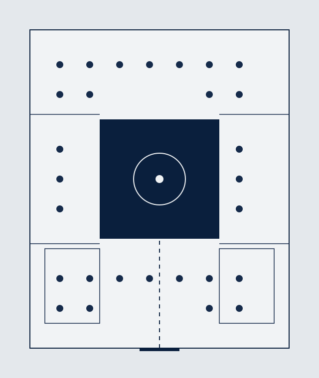
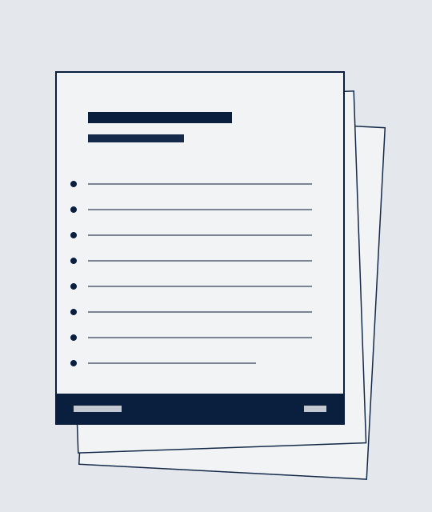

REMOTE WORK REPORT · 2026
混合办公不再是过渡方案，而是组织能力的分水岭。三个正在定型的趋势，决定未来五年的工作方式。
基于 2,400 家企业调研 · 2026 年 9 月
VOL. 2026 / INDIGO
01 · 趋势 TREND
REMOTE WORK 2026
当会议记录、决策过程和项目进展都沉淀在可检索的文档里，“同时在线”不再是协作的前提，时区差异从障碍变成接力棒。
从同步到异步
默认写下来，而不是拉个会。重要讨论迁移到文档与评论串，会议只留给真正需要实时交锋的议题。
时区成为资产
跨时区团队把工作设计成接力：亚洲的结束是欧洲的输入，24 小时开发周期成为现实。
文档即记忆
决策不再消失在聊天记录里。可检索的书面记录，让新人三天就能跟上项目半年的上下文。
深度工作回归
不被消息打断的整块时间重新出现，员工自报的专注时长平均提升 32%。
02 · 趋势 TREND
REMOTE WORK 2026
办公室不再是你必须去的地方，而是你专程前往的地方。它从默认工位，变成高浓度协作的容器。
从成本中心到体验产品
头部公司像设计产品一样设计办公室：静音舱、直播室、咖啡吧，为“值得通勤”而存在。
到场率靠吸引不靠命令
强制返岗的公司经历了离职潮；把办公室做成目的地的公司，周均到场率稳定在 60% 以上。
空间服务于仪式感
全员大会、季度复盘、新人融入——需要集体在场的时刻被刻意设计，其余时间留给远程。

03 · 趋势 TREND
REMOTE WORK 2026
AI 不再是工具栏里的按钮，而是有名字、有分工、有工位的团队成员。管理者的职责清单里，多了“带 AI”这一项。
AI 协调员
自动整理异步讨论、生成纪要、追踪行动项，把跨时区协作的摩擦成本降到最低。
AI 分析师
实时监控项目健康度，在风险变成事故之前发出预警，周报从人写变成人审。
AI 教练
为新成员提供全天候的入职引导，把组织知识库变成可对话的导师。
AI 守门员
审查对外沟通与代码变更的合规性，让分布式团队在无人值守时也不失控。
04 · 数据 DATA
REMOTE WORK 2026
73%
采用混合办公的团队
较 2023 年提升 19 个百分点，完全到岗模式占比首次跌破两成。
58 分钟
日均节省的通勤时间
相当于每年多出 30 个工作日，其中约六成被投入到深度工作。
-21%
远程友好公司的离职率
提供灵活办公选项的公司，核心人才保留率显著高于行业均值。
数据来自 2026 年 1–6 月对 2,400 家企业的问卷与访谈混合调研，离职率为年化口径。
05 · 案例 CASE STUDY
REMOTE WORK 2026
全球最大的全远程公司之一：1,300 名员工分布在 65 个国家，没有一间办公室。它的答案不是工具，而是一份公开的手册。
2,000+ 页手册
从请假流程到晋升标准全部公开可查，新人完全自助上手。
65 个国家
招聘半径不受地理限制，薪酬按地区公开透明，全员同一套标准。
异步优先
会议必须配议程与纪要，缺席者通过记录完整参与，没有信息特权。
季度线下聚
每年一次全员峰会加地区季度聚会，预算集中花在关键的在场时刻。

06 · 案例 CASE STUDY
REMOTE WORK 2026
一家 800 人的咨询公司把总部面积砍掉一半，预算转而投向体验与灵活性。一年后的数据超出预期。
改造前 BEFORE
改造后 AFTER
省下的租金没有变成利润数字，而是变成了员工愿意专程前往的理由。
07 · 建议 ACTION
REMOTE WORK 2026
工具和制度都已就位，真正卡住远程办公的，是管理方式的惯性。
建议一 · 考核
先改考核方式
以产出而非在线时长衡量绩效，把“可见的忙碌”从评价体系里剔除。
目标对齐改为周度书面 check-in，进度对全员可见，同步会议减半。
建议二 · 文档
把文档文化当基础设施
像投资 IT 系统一样投资文档体系：模板、所有权、保鲜期，缺一不可。
决策必须留下书面记录，“没写下来的事”默认为不存在。
08 · 结语 CLOSING
未来五年的赢家，不是把员工拉回办公室的公司，也不是放任自流的公司，而是把灵活性设计成能力的公司。
2026 远程办公趋势报告 · 完
END / 09